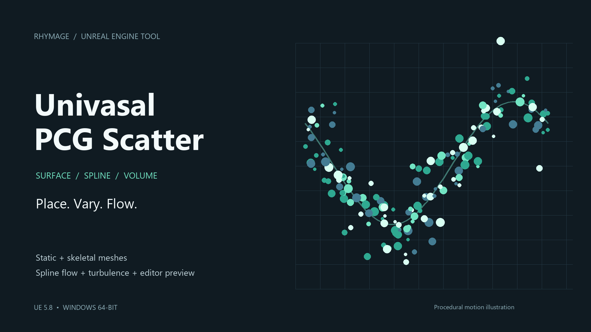

One scatter actor.
Many ways to move.
Unreal Engine 5.8 · Windows 64-bit · Version 1.0.0
배치부터 스플라인 흐름까지, 필요한 설정을 찾아보세요.
Learn installation, surface placement, spline flow and editor preview.

Unreal Engine 5.8 · Windows 64-bit · Version 1.0.0
배치부터 스플라인 흐름까지, 필요한 설정을 찾아보세요.
Learn installation, surface placement, spline flow and editor preview.